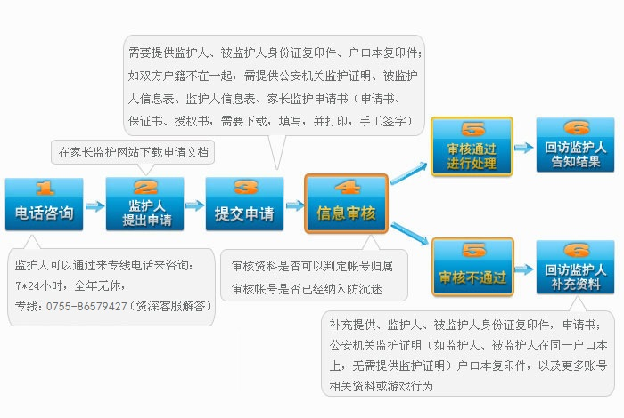

- 系统介绍
- 申请引导
- 申请流程
- 实施方案
- 申请条件：
- 1、 申请人需为被监护未成年人的法定监护人；
- 2、 申请人的被监护人年龄小于18周岁
- 3、 申请人需为大陆公民，不含港、澳、台人士。
- 申请需提交材料：
- 1、监护人信息表（包含监护人的身份证明复印件）；
- 2、被监护人信息表（包含被监护人所玩游戏相关信息及身份证明复印件）；
- 3、填写网络游戏未成年人家长监护申请书、保证书、授权书并手工签字（需下载，填写并打印，签字）；
- 4、申请人与被监护人的监护关系证明文件（户口簿或有关机关出具的证明文件）。
- 申请方式：
- 1.电话服务
- 监护人可以通过来专线电话来咨询，7*24小时，全年无休，专线：0755-86579427 （资深客服解答）。
- 2.接待服务
- 监护人可以直接上门进行申请，接待服务受理时间7*8小时（9:30—17:15），全年无休，接待地址：深圳市南山区粤海街道科技园科苑路6号科技园工业大厦2F西侧226房。
- 其他要求：
- 1.申请人应提交较完备的申请材料，对未提供的信息要及时补充；可请熟知电脑、互联网、游戏的人员进行协助，以便提供详实资料；
- 2.申请人应保证提交的信息真实有效；对于提供虚假信息或伪造证件，我司将保留进一步追究法律责任的权利。


“网络游戏未成年人家长监护工程”是一项由完美时空、盛大、腾讯、网易、搜狐畅游、巨人六家网络游戏企业共同发起并参与实施，由中华人民共和国文化部指导，旨在加强家长对未成年人参与网络游戏的监护，引导未成年人健康、绿色参与网络游戏，和谐家庭关系的社会性公益行动。
“家长监护机”制针对目前未成年人缺乏自控及自律能力，容易陷入沉迷；少数监护人缺少时间照顾孩子，不能及时监督孩子游戏时间的现状，而推出的一种可由家长实施监控，纠正部分未成年子女沉迷游戏的保护机制。
- 供申请监督方式：
- A. 屏蔽账号：根据监护人意愿屏蔽相关游戏应用登陆。
-
B. 账号动态监控：登陆、修改密码等操作将发短信至监护人手机。
1）账号已经有认证手机的，将监护人手机替换为认证手机；
2）账号未认证手机，将监护人手机绑定成认证手机；
- 其他要求：
- 1.申请人应提交较完备的申请材料，对未提供的信息要及时补充；可请熟知电脑、互联网、游戏的人员进行协助，以便提供详实资料；
- 2.申请人应保证提交的信息真实有效；对于提供虚假信息或伪造证件，我司将保留进一步追究法律责任的权利。

- 一 专人负责
- 1、 要指定专门的负责人并将指定负责人及联络方式 向所在地省级文化行政部门备案
- 2、 培训专门服务人员对“家长监护工程”提供专业咨 询解答和服务支持帮助家长了解被监护人游戏行为提供 家长与被监护人进行沟通的建议
- 3、 服务人员要持续跟踪每个申请及时与家长沟通情 况反馈该账号的活动了解未成年人参与游戏的状况为 家长提供必要协助。
- 二 专线电话
- 1.开通单独的专线服务电话（区别于普通服务热线），提供咨询解答和受理服务；
- 2.在原有的客服电话中提供转接到专线服务电话的链接；
- 3.要提供多种服务渠道，确保家长可选择最便利的方式提出服务申请（传真、网络申请、电子邮件、信函邮寄、上门申请等）。
- 三 专区设置
- 1.在网站设置“家长监护工程”专区，在主要运营产品网站的显著位置设置进入该工程页面的链接方式
- 2.专区要有对工程情况、申请条件、处理流程、可采取的监护结果等事项的说明；
- 3.要在专区显著位置设置监护服务申请入口、受理方式（家长监护专线）；
- 4.专区要预设好问题和答案，或展示虚拟案例操作流程及结果，供家长阅览和参考；
- 5.专区要设置服务申请进度查询；
- 6.专区要登载《未成年人健康参与网络游戏提示》，引导未成年人健康地玩游戏、玩健康的游戏。
- 四 季度报告
- 各网络游戏经营单位要在每季度末向所在地省级文化行政部门提交“家长监护工程”情况报告。报告内容包括咨询数量、申请数量、受理与完成情况、重点案例分析、疑难问题说明，对于工程实施过程中出现的问题提出意见或建议 ?
游戏版权所有 Copyright (c) 2018 All Rights Reserved